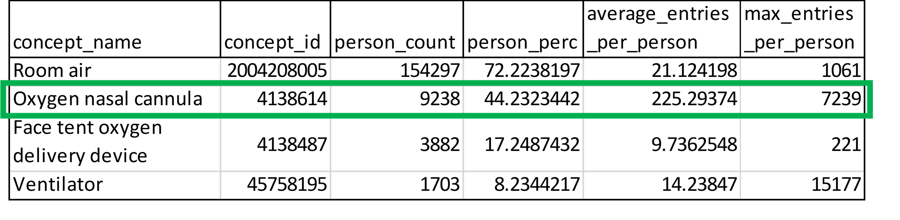

Interpretation
CURE ID Profile Scripts – Output & Interpretation
This section provides synthetic examples of the output generated from the CURE ID person measurement drug exposure and device profile SQL scripts as well as examples of how to interpret the output from each script.
07_A_condition_profile.sql
Generates a table showing condition prevalence in cohort by individual condition concept.
Example Interpretation
In the highlighted row, the table shows that 6499 patients in the cohort have a recorded diagnosis of hypertension, representing 58% of the total cohort.
07_B_measurement_profile.sql
Generates a table which includes the measurement concepts included in the cohort and their names.
Example Interpretation
The highlighted row shows the distribution of the number of times heart rate was measured per patient in the cohort. 25% of the patients had 17 heart rate measurements or less. 50% of patients had at least 34 heart rate measurements recorded. 75% of patients had at most, 72 heart rate measurements recorded. 95% of patients had at most, 398 heart rate measurements recorded. The four columns can also be interpreted as the median for the bottom 50% (percentile_25), overall median (median), median for the top 50% (percentile_75), and the median for the top 10% (percentile_95) – in terms of how many times the measurement was taken for each patient in the cohort.
07_C_drug_exposure_profile.sql
Generates a table of all drugs given in the cohort.
Example Interpretation
The highlighted row shows that acetaminophen was administered to 7,937 total patients which represents 68% of the patients in the cohort. Acetaminophen was administered an average of 2 times per patient with the highest recorded value of 26 administrations for a single patient.
It is important to note that these are ingredients - which is why sodium chloride is the most frequent “drug” because most IV drugs contain sodium chloride as an ingredient.
07_E_device_profile.sql
Generates a table which includes the device concepts included in the cohort and their counts.
Example Interpretation
The highlighted row shows that an oxygen nasal cannula device was used for 9,238 patients in the cohort. That patients count represents 44% of the total cohort. Use of this device was recorded an average of 225.3 times per patient, with a maximum of 7,239 recordings for a single patient, when counting all flowsheet entries.

OMOP Table and Field Basics
Adapted from OHDSI CDM Site: Data Model Conventions
Tables
For the tables of the main domains of the CDM it is imperative that concepts used are strictly limited to the domain. For example, the CONDITION_OCCURRENCE table contains only information about conditions (diagnoses, signs, symptoms), but no information about procedures. Not all source coding schemes adhere to such rules. For example, ICD-9-CM codes, which contain mostly diagnoses of human disease, also contain information about the status of patients having received a procedure. The ICD-9-CM code V20.3 ‘Newborn health supervision’ defines a continuous procedure and is therefore stored in the PROCEDURE_OCCURRENCE table.
Fields
Variable names across all tables follow one convention:
| Notation | Description |
| _SOURCE_VALUE | Verbatim information from the source data, typically used in ETL to map to CONCEPT_ID, and not to be used by any standard analytics. For example, CONDITION_SOURCE_VALUE = ‘787.02’ was the ICD-9 code captured as a diagnosis from the administrative claim. |
| _ID | Unique identifiers for key entities, which can serve as foreign keys to establish relationships across entities. For example, PERSON_ID uniquely identifies each individual. VISIT_OCCURRENCE_ID uniquely identifies a PERSON encounter at a point of care. |
| _CONCEPT_ID | Foreign key into the Standardized Vocabularies (i.e. the standard_concept attribute for the corresponding term is true), which serves as the primary basis for all standardized analytics. For example, CONDITION_CONCEPT_ID = 31967 contains the reference value for the SNOMED concept of ‘Nausea’ |
| _SOURCE_CONCEPT_ID | Foreign key into the Standardized Vocabularies representing the concept and terminology used in the source data, when applicable. For example, CONDITION_SOURCE_CONCEPT_ID = 45431665 denotes the concept of ‘Nausea’ in the Read terminology; the analogous CONDITION_CONCEPT_ID might be 31967, since SNOMED-CT is the Standardized Vocabulary for most clinical diagnoses and findings. |
| _TYPE_CONCEPT_ID | Delineates the origin of the source information, standardized within the Standardized Vocabularies. For example, DRUG_TYPE_CONCEPT_ID can allow analysts to discriminate between ‘Pharmacy dispensing’ and ’Prescription written |
For more information, see: